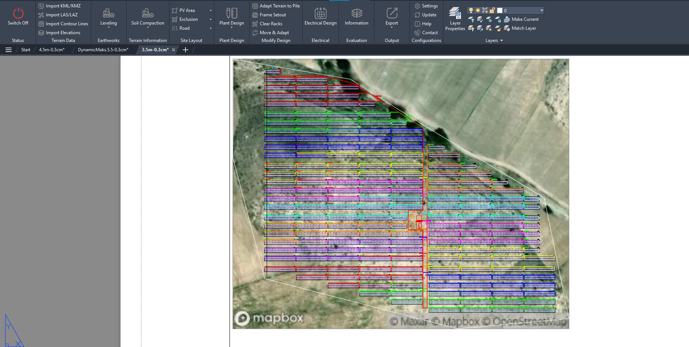
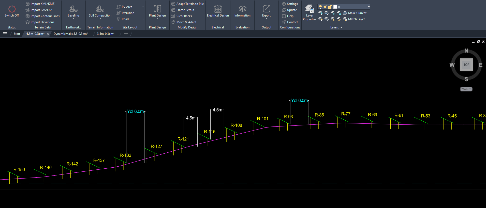

Case 03 · Production Analysis
PVsyst report interpretation
Enerji üretim raporlarının teknik risk ve tasarım kararları açısından yorumlanması.

Problem Tanımı
Bu çalışmada rapor çıktılarındaki kayıp kalemlerinin tasarım kararına nasıl yansıtılacağı ele alınmıştır. Amaç, yalnızca toplam üretim değerine bakmak yerine kayıp dağılımını teknik olarak okumaktır.
Proje Bağlamı
Analiz kapsamında farklı sıra aralığı ve geometri kombinasyonları için DC güç, gölgeleme davranışı ve kablo etkisi birlikte değerlendirilmiştir.
Kullanılan Yöntem
Varsayımlar doğrultusunda senaryolar aynı meteorolojik veri seti altında koşturulmuş, loss tree kırılımları ve yıllık yield çıktıları karşılaştırılmıştır.
Teknik Analiz


Elde edilen bulgular, gölgeleme davranışındaki küçük değişimlerin dizi bazında farklı kayıp dağılımları ürettiğini ve bu durumun kablolama kararını da etkilediğini göstermiştir.
Bulgular
- Loss tree yorumunda önceliklendirme yapılmadan karar kalitesi düşmektedir.
- Gölgeleme-kablo etkileşimi tek parametreli değerlendirilemez.
- Yıllık yield farkı küçük olsa da operasyonel risk etkisi değişebilmektedir.
Sonuç
Teknik değerlendirme sonucunda üretim raporlarının tasarım kararına doğrudan bağlanabilmesi için kayıp kalemlerinin düzenli bir karar akışıyla okunması gerekmektedir.
Teknik Çıkarımlar
Bu çalışma, rapor okuma standardizasyonunun ekipler arası karar tutarlılığını artırdığını göstermektedir.